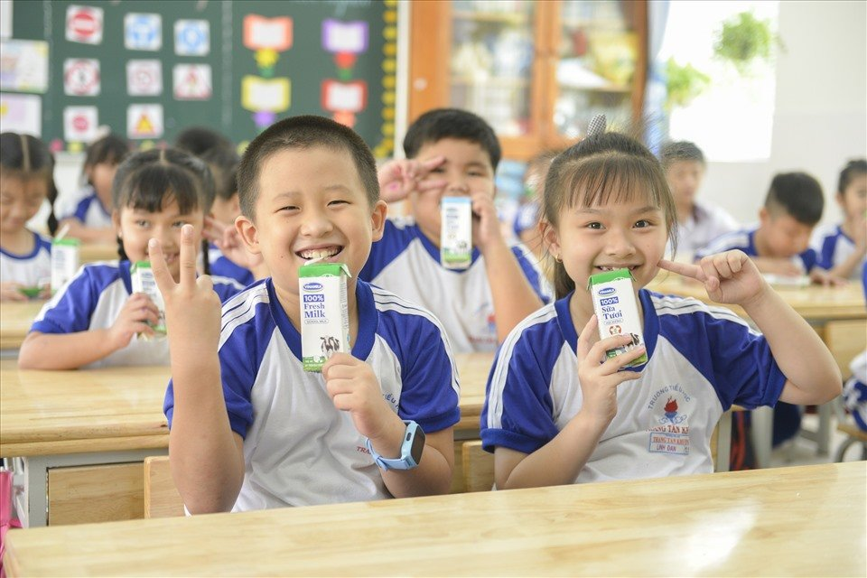
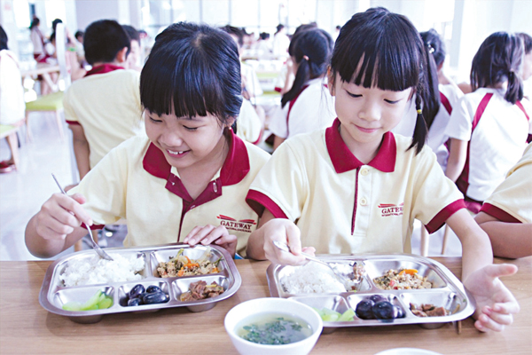
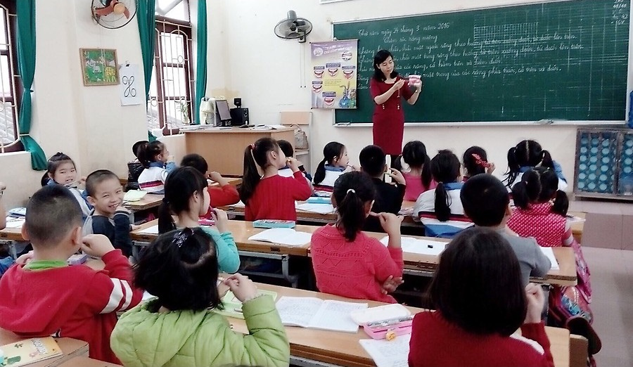
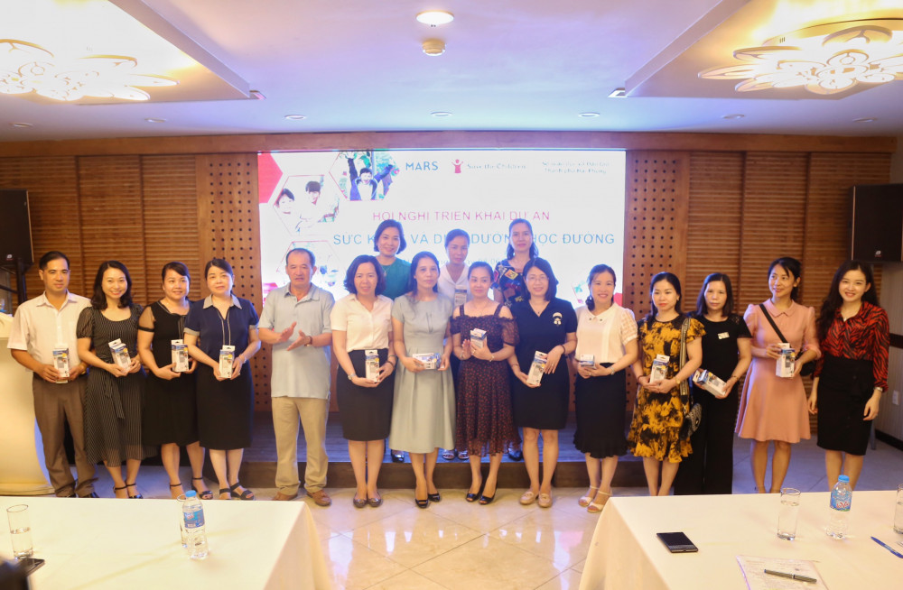

Phê duyệt Chương trình Sức khỏe học đường giai đoạn 2021 – 2025
Một giải pháp chủ yếu nữa là tăng cường và nâng cao chất lượng nguồn nhân lực. Bố trí cán bộ, giáo viên, nhân viên chuyên trách hoặc kiêm nhiệm, kể cả trường hợp không thuộc biên chế của trường học để triển khai công tác sức khỏe học đường phù hợp với điều kiện cụ thể từng địa phương, từng trường học. Khuyến khích các trường học ngoài công lập chủ động bố trí đầy đủ bộ máy, nhân lực phục vụ cho y tế trường học, bữa ăn học đường và không ngừng nâng cao chất lượng hoạt động. Tăng cường đào tạo, tập huấn, bồi dưỡng để nâng cao năng lực cho đội ngũ cán bộ quản lý, giáo viên và nhân viên y tế trường học, y tế cơ sở; đội ngũ nhân viên xây dựng thực đơn, chế biến suất ăn sẵn cho trường học bảo đảm chất lượng bữa ăn học đường

Chế độ dinh dưỡng quyết định sự phát triển thể lực, trí lực, tầm vóc và khả năng học tập của trẻ.
Chế độ dinh dưỡng quyết định sự phát triển thể lực, trí lực, tầm vóc và khả năng học tập của trẻ. Chế độ dinh dưỡng đầy đủ, cân đối của trẻ là ăn đủ các nhóm thực phẩm, ăn đa dạng, các chất dinh dưỡng ở tỉ lệ cân đối và hợp lý trong từng bữa ăn, từng ngày.
Chế độ dinh dưỡng đúng, đủ, hợp lý sẽ giúp cơ thể phát triển tối ưu cả về thể chất và tinh thần. Ngược lại, chế độ dinh dưỡng không đủ, không đúng, không hợp lý sẽ mất tính cân đối các chất dinh dưỡng dẫn tới các bệnh thiếu - thừa dinh dưỡng, các bệnh thiếu vi chất dinh dưỡng và các bệnh mạn tính không lây…
Chế độ dinh dưỡng đúng, đủ, hợp lý sẽ giúp cơ thể phát triển tối ưu cả về thể chất và tinh thần. Ngược lại, chế độ dinh dưỡng không đủ, không đúng, không hợp lý sẽ mất tính cân đối các chất dinh dưỡng dẫn tới các bệnh thiếu - thừa dinh dưỡng, các bệnh thiếu vi chất dinh dưỡng và các bệnh mạn tính không lây…
Chế độ dinh dưỡng hợp lý cho trẻ trung học cơ sở
Ở độ tuổi trung học cơ sở (còn gọi là tuổi vị thành niên), trẻ sẽ trải qua những thay đổi lớn về thể chất: chiều cao phát triển vượt bậc, vóc dáng cơ thể thay đổi, vỡ giọng… Lúc này, trẻ cần được thiết lập một chế độ dinh dưỡng cân đối và hợp lý đáp ứng nhu cầu tăng trưởng, học tập và hoạt động. Nếu 1.000 ngày đầu đời được xem là “giai đoạn vàng” đầu tiên trong quá trình tăng trưởng của trẻ, thì dậy thì chính là “giai đoạn vàng” thứ hai. Do đó, chế độ ăn cho trẻ THCS (11-15 tuổi) cần được bổ sung thêm rất nhiều thực phẩm lành mạnh và giàu dinh dưỡng so với giai đoạn trước đó.

Dự án “Sức khỏe và dinh dưỡng học đường” tại Hải Phòng Hình thành thói quen tốt cho học sinh tiểu học
Dự án “ Sức khỏe và dinh dưỡng học đường” do Tổ chức Cứu trợ Trẻ em Quốc tế phối hợp Sở Giáo dục- Đào tạo (GD-ĐT) thành phố triển khai tại Hải Phòng từ năm 2013. Sau 5 năm thực hiện, dự án nâng tổng số trường được hưởng lợi lên 29 trường; đồng thời đạt một số kết quả bước đầu.
Đây là một trong những ưu điểm rõ nét nhất mà dự án mang lại cho học sinh tiểu học và THCS. Xuất phát từ thực tế phần lớn học sinh ở những độ tuổi này chưa có kiến thức và ý thức đầy đủ, khoa học trong việc giữ gìn vệ sinh cá nhân, hiểu đúng về dinh dưỡng, dự án tập trung cải thiện dịch vụ chăm sóc răng miệng, các vấn đề về sức khỏe và dinh dưỡng tại trường học.
Đây là một trong những ưu điểm rõ nét nhất mà dự án mang lại cho học sinh tiểu học và THCS. Xuất phát từ thực tế phần lớn học sinh ở những độ tuổi này chưa có kiến thức và ý thức đầy đủ, khoa học trong việc giữ gìn vệ sinh cá nhân, hiểu đúng về dinh dưỡng, dự án tập trung cải thiện dịch vụ chăm sóc răng miệng, các vấn đề về sức khỏe và dinh dưỡng tại trường học.

Hội nghị triển khai dự án “Sức khỏe và Dinh dưỡng học đường năm 2020”
Hội nghị triển khai dự án “Sức khỏe và Dinh dưỡng học đường năm 2020”
Sáng 8/6, Sở Giáo dục và Đào tạo phối hợp với Tổ chức Cứu trợ Trẻ em Quốc tế (SCI) tổ chức hội nghị triển khai Dự án “Sức khỏe và Dinh dưỡng học đường năm 2020”.
Dự án “Sức khỏe và Dinh dưỡng học đường năm 2020” do SCI tài trợ, được thực hiện từ ngày 1/5/2020 đến 30/11/2020 tại 105 trường học trên địa bàn các 3 thành phố: Hà Nội, Hải Phòng, Tiền Giang. Tại Hải Phòng, dự án được triển khai thực hiện tại 38 trường mầm non, tiểu học, THCS trên địa bàn các quận, huyện: Hồng Bàng, Ngô Quyền, Kiến An, Đồ Sơn, Hải An, Dương Kinh, Cát Hải, Lê Chân, Tiên Lãng. Trong thời gian thực hiện, Ban tổ chức sẽ tiến hành tập huấn cho giáo viên và học sinh các trường tham gia dự án về sức khỏe và dinh dưỡng học đường; tập huấn chăm sóc và điều trị các bệnh về răng cho trẻ em, bao gồm cả kỹ năng tư vấn; tổ chức khám răng cho 5.200 học sinh tại các trường tham gia dự án; hỗ trợ hệ thống rửa tay, khu vệ sinh tại 2 trường tham gia dự án; tổ chức các sự kiện truyền thông cấp trường và cấp quận, huyện; tổ chức thực hiện giảng dạy về sức khỏe và dinh dưỡng học đường thông qua các tiết ngoại khóa